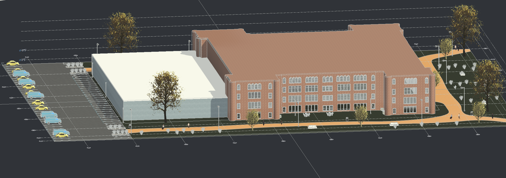

Assignment 1 – Engineering Project Management Concepts
IE492 Spring 2026 – Dr. Ranky
Introduction
This assignment explores key concepts in engineering project management based on the topics covered in the Kerzner Project Management book and the Ranky multimedia learning resources. The purpose of this assignment is to understand how engineering management principles help engineers plan, organize, and control projects effectively.
In this assignment, several important engineering management concepts are discussed, including project terminology, team organization, cost management, change management, teamwork, and strategies for avoiding project failures. These concepts are also analyzed in the context of my company, D & V Civil Engineering Management, which focuses on CAD modeling, BIM coordination, and sustainable engineering design.
EM-2: Engineering Project Management Terminology
[Write about key project management terminology such as scope, stakeholders, deliverables, project lifecycle, risk, schedule, and cost management. Explain how these terms apply to engineering projects.]
[Explain how these concepts would apply in your company D & V Civil Engineering Management.]
EM-3: Best Practices for Organizing and Staffing the Project Office and Team
[Explain how engineering project teams are structured. Mention roles like project manager, engineers, CAD designers, contractors, and stakeholders.]
[Describe how your company would organize a project team and coordinate tasks.]
EM-4: Key Concepts and Skills Project Managers Must Understand
[Discuss the key skills needed by engineering project managers such as leadership, communication, planning, decision making, and risk management.]
[Explain why these skills are important for engineering projects.]
EM-5: Modern Project Management Modeling Methods and Principles
[Discuss modern tools used in engineering project management such as BIM, CAD modeling, digital simulations, and project planning software.]
[Explain how these tools improve coordination, reduce design conflicts, and improve project planning.]
EM-6: Earned Value Management (EVM) and Cost Management Methods
[Explain what Earned Value Management is and how it helps track project performance.]
[Discuss how cost management helps control project budgets and schedules.]
EM-7: Best Practice Pricing Strategies in Engineering Project Management
[Discuss pricing strategies such as fixed pricing, cost-plus pricing, and value-based pricing.]
[Explain how engineering companies determine the price of engineering services.]
EM-8: Best Practice Change Management
[Explain how engineering design changes are handled during a project.]
[Discuss why documenting changes and communicating them to stakeholders is important.]
EM-9: Best Practice Project Closeout
[Explain what happens during the project closeout phase such as final documentation, evaluation of results, and lessons learned.]
[Explain how your company would perform project closeout.]
EM-10: Best Practice Project Teamwork
[Discuss why teamwork is essential in engineering projects.]
[Explain how collaboration between engineers, designers, and managers improves project outcomes.]
EM-11: Best Practices to Avoid Project Failures
[Discuss common reasons why engineering projects fail such as poor planning, communication issues, cost overruns, and lack of coordination.]
[Explain strategies that engineering managers can use to prevent project failures.]
EM-12: Best Practice Project Presentations
[Explain the importance of project presentations for communicating project results to clients and stakeholders.]
[Discuss tools engineers use to present projects such as reports, diagrams, BIM models, and visual presentations.]
Technical Illustration – Engineering Model
The following illustration shows a BIM / Revit model created as part of an engineering design project. BIM models help engineers visualize the structure, improve coordination between systems, and identify potential design conflicts before construction begins.

Conclusion
[Write a short conclusion summarizing what you learned about engineering project management and how these concepts apply to engineering projects.]